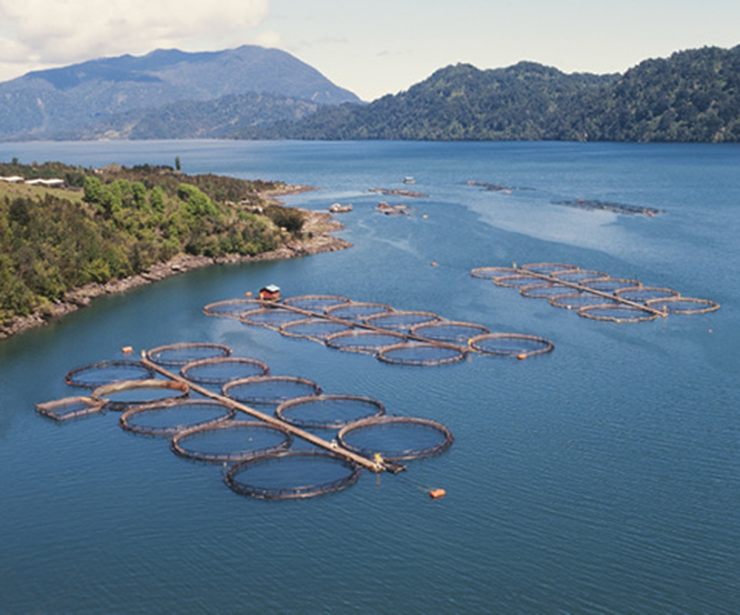
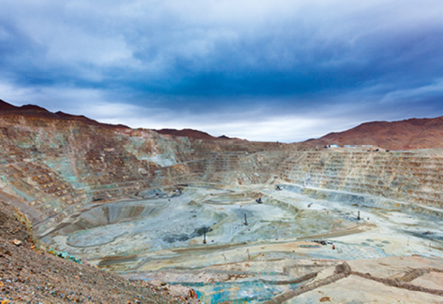
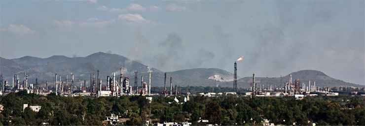
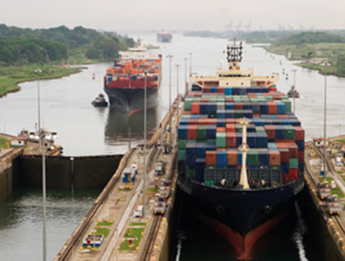
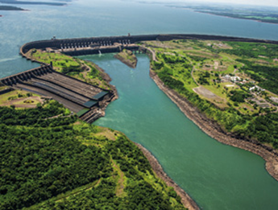
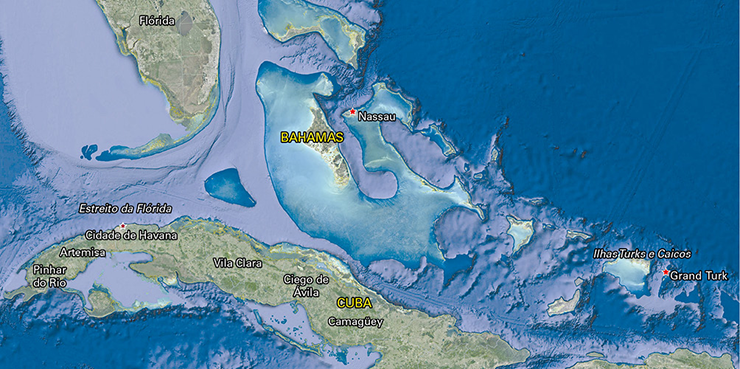
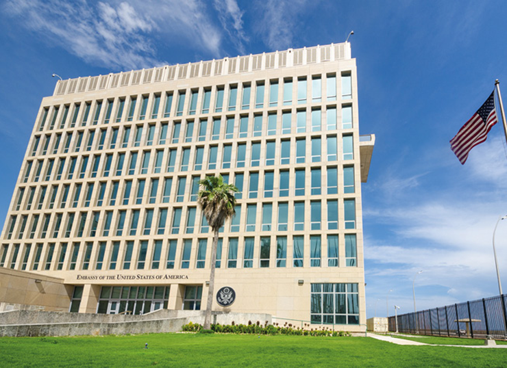
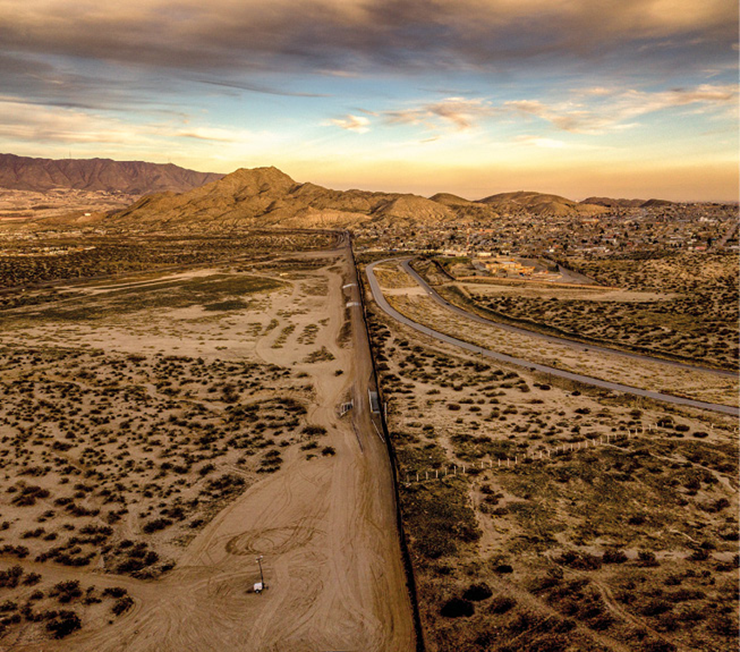
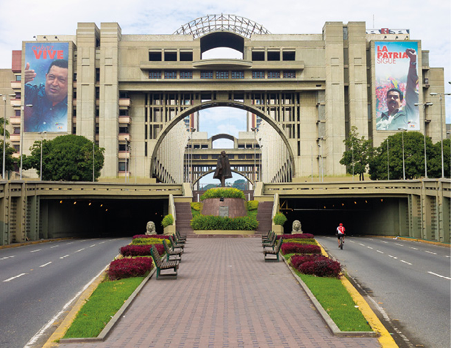

Memorial da América Latina, em São Paulo. A escultura em forma de mão, projetada por Oscar Niemeyer, representa o mapa da região e sua história colonial.
cifotart/Shutterstock.com
A América Latina corresponde à porção do continente americano em que predominam os países de colonização portuguesa e espanhola. A economia latina guarda fortes laços com o período colonial, havendo destaque para as atividades do setor primário. O passado colonial também se relaciona ao subdesenvolvimento predominante nos Estados latinos, ainda que alguns sejam considerados países emergentes.
Alguns países da região tiveram relativo sucesso ao instalar parques industriais e infraestruturas modernas de transporte, energia e comunicações, porém, mantiveram-se dependentes das potências desenvolvidas. Além do subdesenvolvimento, em vários níveis, parte da população da região sofre com conflitos políticos, militares e a violência generalizada, sobretudo nas grandes cidades.
- Por que países latino-americanos que se industrializaram, como Brasil e México, ainda são considerados subdesenvolvidos?
- A América Latina é uma das regiões mais desiguais e violentas do mundo. Existe relação entre desigualdade e violência? Discuta.
Neste capítulo serão abordadas as habilidades EM13CHS201, EM13CHS602, EM13CHS603, EM13CHS604.
América Latina e sua diversidade
A América Latina, como definido no capítulo anterior, corresponde ao grupo de países da América que foram colonizados por países latinos, basicamente Espanha e Portugal, mas há também alguns de colonização francesa, como o Haiti.
Além disso, como a região costuma ser associada à parte não desenvolvida economicamente do continente americano, alguns países colonizados por potências coloniais, como o Reino Unido e os Países Baixos, também podem ser incluídos na América Latina. É o caso da Guiana, do Suriname, da Jamaica, entre outros. São mais de 30 Estados independentes e quase 20 territórios sob o domínio de outros países, como a Guiana Francesa, domínio ultramarino da França. Apesar de muitas características em comum, as diferenças físicas, socioeconômicas, culturais e políticas são grandes na região.
Regionalização latina
Diante da diversidade física e social da América Latina, a região pode ser subdividida, conforme mostra o mapa a seguir:
Fonte: INSTITUTO BRASILEIRO DE GEOGRAFIA E ESTATÍSTICA. Atlas geográfico escolar . 8 ed. Rio de Janeiro: IBGE, 2018. p. 32. (Adapt.).
Ponto de vista da Geografia
Em Geografia, a regionalização é uma estratégia de seleção e diferenciação de parcelas do espaço geográfico de acordo com critérios preestabelecidos. A regionalização da América Latina utiliza tanto critérios físico-geográficos como culturais e políticos. A América Andina, por exemplo, está diretamente ligada à sua localização na cordilheira dos Andes. O Brasil, por sua vez, se distingue do restante do continente devido à herança da colonização portuguesa.
Subdesenvolvimento latino-americano
Em termos socioeconômicos, dizemos que a América Latina é uma região subdesenvolvida. Entre os indicadores que corroboram essa afirmação estão baixo rendimento per capita , grande desigualdade social, níveis educacionais inadequados e condições de vida precárias. Além disso, muitos países apresentam elevados índices de violência.
De modo geral, os estudiosos concordam que as condições socioeconômicas atuais resultam do processo histórico, inicialmente determinado pelo modelo de colonização empregado, no qual houve predomínio de colônias de exploração , diferente do modelo implantado na América Anglo-saxônica, com as colônias de ocupação . Mesmo após as independências, as sociedades latino-americanas permaneceram atreladas a modelos econômicos que priorizaram a exploração do trabalho e a manutenção das estruturas econômicas, o que perpetuou a desigualdade social e comprometeu a estabilidade político-econômica dos países.
Essa condição, contudo, não é homogênea em todos os países da região, de modo que podemos classificá-los, genericamente, em dois grupos: subdesenvolvidos e emergentes.
... no modelo de colonização da América espanhola, foram utilizados métodos de exploração do trabalho como a mita e a encomienda . Tais métodos fizeram parte das estratégias da elite colonial para garantir mão de obra barata e condições para o acúmulo de riquezas. Estruturas sociais de dominação desse tipo foram se transformando; porém a concentração da renda e da terra caracteriza as sociedades e as economias da região até hoje.
A partir de meados do século XX, alguns países da região experimentaram relativo desenvolvimento socioeconômico, pois ampliaram o acesso à educação, investiram em inovação tecnológica e em infraestruturas produtivas, de transporte, de energia e de comunicação modernas. Essas condições proporcionaram aumento na produção de riqueza e melhorias, ainda que limitadas, na qualidade de vida.
Porém, na maior parte dos países permaneceu a condição de pobreza severa. Suas economias estavam atreladas fortemente a um setor primário de baixa produtividade, com acesso restrito a bens e a infraestruturas e reflexos na condição de vida precária das pessoas. Ambos os grupos fazem parte da periferia econômica mundial. O primeiro grupo corresponde aos países emergentes (em crescimento). O segundo é formado por países subdesenvolvidos ou pobres.
Principais atividades econômicas na América Latina
O fato de ser uma região subdesenvolvida não significa que a América Latina não tenha importância e influência na economia mundial, pelo contrário. Como sabemos, a expansão da economia capitalista, a partir da Europa, gerou uma Divisão Internacional do Trabalho (DIT), na qual os países e as colônias inseriram-se de modo diverso e hierarquizado.
Na antiga DIT, organizada entre a Primeira e a Segunda Revolução Industrial, o continente latino-americano foi um grande fornecedor de matérias-primas e importante consumidor de produtos industrializados. No período pós-Segunda Guerra Mundial, com a organização da Nova DIT, alguns países dessa região conseguiram industrializar-se e conquistaram outras posições na DIT.
Atualmente, investimentos industriais continuam a ser feitos em países da região, mas, de modo geral, a maioria dos países latino-americanos ainda tem economias primário-exportadoras.
Agropecuária
O modelo colonial implantado no continente latino-americano se baseou na agricultura de plantation , caraterizada pelo uso de mão de obra escravizada ou extremamente barata, quando livre, baixo nível tecnológico e concentração fundiária, cuja produção é destinada ao mercado externo, geralmente aos países desenvolvidos.
Os latifúndios são um traço da concentração fundiária. Essa condição contribuiu para a manutenção da disponibilidade de mão de obra barata, pois os camponeses não conseguem permanecer na terra ou ter acesso à propriedade. A alternativa é aceitar empregos mal remunerados ou migrar para outras áreas, geralmente as cidades.
A mão de obra barata desestimula investimentos em tecnologia, que passa a ser vista como um custo desnecessário. Desse modo, a produtividade permanece baixa, tanto na relação entre a produção e a área ocupada como na relação entre a produção e o número de trabalhadores envolvidos. Esse tipo de agricultura ainda persiste em alguns países e regiões mais pobres da América Latina, como Honduras, Haiti e Nicarágua, na América Central, que estão entre os mais pobres da região. Entre os produtos cultivados se destacam banana, café, abacaxi, cacau, manga e cana-de-açúcar, típicos de climas tropicais.
A modernização agrícola ocorre há décadas em vários países da América Latina. Mesmo naqueles em que ainda predomina uma agricultura de baixa produtividade, percebe-se o crescente uso de tecnologias, com mecanização, uso de sementes selecionadas e/ou transgênicas, agrotóxicos e fertilizantes químicos. Essa modernização ocorre, principalmente, nos setores voltados à exportação e à produção de matérias-primas industriais. Nesse caso, importantes países agroexportadores nos quais se verifica a expansão do agronegócio são:
A expansão do agronegócio nesses países, no entanto, não colabora para o desenvolvimento socioeconômico e se coloca como parte das contradições sociais no campo, pois há agricultores na pobreza e sem acesso à terra, além da situação de povos tradicionais, como indígenas e quilombolas, que veem suas terras serem invadidas e tomadas ilegalmente. Também são comuns as denúncias de trabalho infantil e/ou análogo à escravidão.
Dois outros problemas graves entre os países da América Latina são a disputa pelos recursos naturais e a devastação ambiental. O agronegócio, muitas vezes, substitui áreas com vegetação natural por cultivos e pastagens. Essa atividade, ainda que proporcione aumento da produtividade agrícola e contribua, relativamente, para o crescimento econômico, está relacionada intimamente à intensificação de problemas socioambientais.
Estruturas para criação de salmões no sul do Chile.
MARCELODLT/Shutterstock.com
Pesca e piscicultura
A comercialização de peixes oriundos da pesca e da piscicultura é uma atividade de grande relevância na América Latina. A pesca se refere à captura dos peixes diretamente na natureza; a piscicultura, por sua vez, refere-se à criação em ambientes aquáticos cercados e controlados.
A pesca é uma importante atividade na costa pacífica da América do Sul, principalmente no Chile e no Peru, por onde passa a corrente marítima friade Humboldt, rica em fitoplâncton, propícia à multiplicação dos estoques naturais de peixes e frutos do mar. A influência dessa corrente também se estende para o Chile, onde são criados salmões em áreas cercadas no oceano. O salmão é um dos principais produtos de exportação do país.
Mineração
Assim como a agricultura de exportação, a atividade mineradora é desempenhada desde o período colonial, graças à estrutura geológica rica em jazidas minerais. Primeiramente, o ouro e a prata foram os recursos largamente extraídos. Com o processo de industrialização, principalmente a partir de meados do século XIX, outras matérias-primas minerais começaram a ganhar destaque. Atualmente, a atividade mineradora apresenta importância econômica em diferentes países da região, com uma diversidade ampla de recursos explorados. Veja a seguir os principais produtores de alguns recursos minerais.
Fonte: “Latin America: landforms and resources. ” Geography. Disponível em: <http: //geography.name/latin-america-landforms-and-resources />.Acesso em: 5 ago. 2021.
Extração de sal no salar de Uyuni, na Bolívia.
Dmitry Burlakov/Shutterstock.com
Chuquicamata, maior mina de cobre do Chile.
Jose L. Stephens/Shutterstock.com
Industrialização e política econômica na América Latina
A industrialização latino-americana foi tardia (periférica). Os primeiros passos rumo a uma economia nitidamente industrial ocorreram ainda no final do século XIX. A industrialização, contudo, só obteve destaque após a Segunda Guerra Mundial.
Um importante indutor da industrialização latino-americana foi a criação, em 1948, da Comissão Econômica para a América Latina e o Caribe (Cepal), órgão da Organização das Nações Unidas (ONU) destinado a estudar os problemas econômicos e sociais da região e propor caminhos para o seu desenvolvimento. A proposta para promover o desenvolvimento econômico e social da região era estimular a criação de indústrias para produzir localmente as mercadorias até então importadas.
O estímulo seria dado pelo protecionismo econômico e a intervenção estatal na economia, pautada na construção de infraestruturas e de indústrias de base. Essas ações passariam a caracterizar uma política econômica conhecida como desenvolvimentismo, aplicado de forma mais intensa por Brasil, Argentina e México. Essas nações iniciaram processos de industrialização relativamente importantes, que lhes proporcionaram aumento da produção de riquezas e melhoria nas condições de vida da população.
Zona industrial na cidade de Tula, México.
DarioGaona/iStockphoto.com
A entrada de multinacionais e capitais estrangeiros massivos gerou uma industrialização de fora para dentro, ou seja, a industrialização latino-americana não foi caracterizada por indústrias nacionais, como ocorreu nos países de industrialização pioneira. Outro limite da industrialização latino-americana, relacionado ao baixo desenvolvimento econômico e tecnológico, foi a geração de uma grande dependência financeira. Os investimentos estatais em infraestrutura e indústrias de base apoiaram-se em empréstimos de bancos e de organizações internacionais.
Para simpatizantes do modelo econômico liberal, a presença dos Estados na industrialização prejudicou o desenvolvimento econômico, pois o protecionismo e os investimentos em infraestrutura e em indústrias de base teriam desestimulado as empresas, nacionais e internacionais, a investir em melhorias tecnológicas e em aumento da qualidade e da eficiência.
Acostumadas com a proteção alfandegária e outros estímulos estatais, mesmo diante de ineficiência e de baixo nível de inovação, muitas indústrias da região começaram a fechar as portas a partir dos anos 1990, quando o protecionismo deu lugar a práticas neoliberais.
Crise do desenvolvimentismo e neoliberalismo na América Latina
Entre o final dos anos 1950 e o início da década de 1970, os empréstimos internacionais para economias em processo de industrialização foram recorrentes e vultosos, o que levou países como Brasil, México e Argentina a contraírem dívidas externas volumosas.
Após 1973, a instabilidade no mercado financeiro internacional, causada pelo primeiro choque do petróleo, levou a um aumento significativo das dívidas externas, o que gerou as chamadas “crises da dívida” em diversos países latinos na década de 1980, também conhecida como “a década perdida”.
As crises geraram situações extremamente negativas para os Estados latino-americanos, que não conseguiam pagar os juros e as parcelas de suas dívidas. A alternativa era renegociá-las com os credores e recorrer à ajuda de organismos internacionais como o Banco Mundial e o Fundo Monetário Internacional (FMI). No entanto, para receber essa ajuda, os governos precisaram cortar investimentos em áreas estratégicas, inclusive sociais, o que gerou recessão e insatisfação popular.
No contexto de clara dependência em relação aos investidores internacionais, ganhou força a ideia de que os países desenvolvimentistas deveriam fazer a transição para o neoliberalismo.
A crise criou as condições políticas para que o neoliberalismo passasse a ser uma opção político-econômica difundida na América Latina. Em 1989, Estados Unidos, Banco Mundial e FMI sugeriram aos países latino-americanos a adoção de uma série de medidas neoliberais, como privatizações, cortes de gastos públicos e abertura comercial. Esse conjunto de medidas ficou conhecido como Consenso de Washington .
A década de 1990 foi marcada pela adoção das políticas neoliberais na América Latina. Por um lado, essas políticas conseguiram combater problemas que vinham afetando as economias da região, principalmente a inflação. Também foi positiva a atualização tecnológica proporcionada pela abertura de mercado, que tornou possível a importação de produtos eletrônicos, como celulares e computadores. Por outro lado, essas medidas eliminaram empregos industriais e geraram aumento da desigualdade social, com revoltas populares e críticas severas ao modelo neoliberal.
No início do século XXI, a América Latina foi marcada pela ascensão de governos de esquerda.
Fonte: “El mapa político de América Latina”. AFP , 6 jun. 2011. Disponível em: <http: //u.afp.com/JvtV>. Acesso em: 5 ago. 2021. (Adapt.). INSTITUTO BRASILEIRO DE GEOGRAFIA E ESTATÍSTICA. Atlas geográfico escolar . 8 ed. Rio de Janeiro: IBGE, 2018. p. 32. (Adapt.).
Entre os governantes identificados com a esquerda, ou simpatizantes dela, alguns foram mais moderados enquanto outros foram mais radicais. Os primeiros retomaram a intervenção estatal na economia e colocaram em prática programas sociais, investiram em educação e em projetos de renda mínima, além de valorizarem políticas identitárias que defendiam os direitos de minorias étnicas e povos tradicionais. Os governos Lula, no Brasil, Kirchner, na Argentina, Vásquez, no Uruguai, e Bachelet, no Chile, são exemplos da esquerda mais moderada.
Os governos mais radicais foram além: nacionalizaram empresas e mudaram regras eleitorais e de organização do poder no país. São exemplos dessa esquerda mais radical os governos Chávez, na Venezuela, e Morales, na Bolívia. No caso de Evo Morales (1959-), que chegou à presidência da Bolívia em 2006, é preciso considerar que ele é de origem indígena. Mesmo com uma população majoritariamente indígena, o país sempre fora governado por representantes da elite branca. Portanto, a eleição e a manutenção desse presidente foram símbolos do ganho de poder e da representatividade de grupos historicamente discriminados na América Latina.
Em termos gerais, é possível dizer que grupos populares há muito discriminados, entre eles indígenas, quilombolas, camponeses, mulheres, negros e a comunidade LGBTQ+, puderam dispor de maior espaço para sua luta e para reivindicar direitos historicamente negados a eles.
No âmbito econômico, as políticas intervencionistas implantadas nos países latino-americanos pareciam gerar bons resultados e tinham amplo apoio popular. No Brasil, Luiz Inácio Lula da Silva (1945-), por exemplo, entregou o cargo com um dos maiores índices de aprovação da história da República.
Há uma importante diferença histórica a ser destacada. Enquanto os governos intervencionistas das décadas de 1950, 1960 e 1970 aplicavam o desenvolvimentismo para promover a industrialização, o intervencionismo do início dos anos 2000 não obteve êxito nesse aspecto, pois manteve ou mesmo aprofundou a tendência, iniciada ainda nos anos 1980, de encolhimento da indústria latino-americana.
Com a queda do preço das commodities a partir de 2010, a maioria das economias latino-americanas entrou em crise, o que fez crescer o descontentamento popular, reforçado por denúncias de corrupção em vários países da região, com destaque para Brasil, Argentina, Peru, Equador e Venezuela.
O novo contexto impulsionou líderes políticos neoliberais que pretendiam combater os problemas econômicos da região, geralmente alinhados com o espectro político de direita.
Fonte: Bureau of Labor Statistics, Bloomberg, Itaú. In : Artur Manoel Passos. “Declínio secular das commodities , de volta à tendência?”. Macro visão , 31 mar. 2015, p. 1. Disponível em: <www.itau.com.br /_arquivosestaticos/itauBBA/contents/common/docs/20150331_MQCRO_VISAO_COMM_.pdf>. Acesso em: 5 ago. 2021.
Maurício Macri (1959-), presidente da Argentina (2015-2019), foi eleito no contexto de ataque e insatisfação com governos de esquerda. Sua proposta foi acabar com o modelo intervencionista implementado pelos Kirchner (Néstor e Cristina) e adotar medidas neoliberais como as da década de 1990. Entre as medidas estavam congelamento de salários, diminuição do número de funcionários públicos e liberação de tarifas de energia, água e combustíveis. O objetivo era reduzir gastos e aumentar a arrecadação, para equilibrar as contas governamentais.
Começou a haver questionamentos por toda a Argentina, o que dificultou o controle da economia. Para piorar, uma seca prolongada prejudicou as exportações de grãos entre 2016 e 2017, o que diminuiu consideravelmente a entrada de capital. A moeda argentina sofreu desvalorização, a inflação aumentou e também a dívida pública. O governo se viu obrigado a pedir ajuda ao FMI, o retorno a um ciclo de dependência financeira deixado havia anos.
Fonte: “¿Izquierda o derecha? Así está el mapa político actual de América Latina”, CNN Español , 16 ago. 2017. Disponível em: <http: //cnnespanol.cnn.com/20017/08/16/izquierda-o-derecha-si-esta-el-mapa-politico-actual-de-america-latina/#0> . Acesso em: 5 ago. 2021. (Adapt.).
Integração latino-americana
Desde os processos de independência, ocorridos principalmente no início do século XIX, há propostas de integração entre as nações latino-americanas. As primeiras e mais importantes vieram do líder Simón Bolívar (1783-1830), que influenciou parte considerável das independências na América espanhola.
A principal luta de Bolívar, depois da independência, foi a busca pelo estabelecimento de uma confederação entre México, Grã-Colômbia (que incluía os atuais territórios da Colômbia, da Venezuela, do Panamá e do Equador), Peru, Bolívia, Argentina e as Províncias Unidas da América Central, que incluía, em um único país, os territórios livres daquela parte da América Latina. A proposta de integração de Bolívar não foi adiante, em razão das disputas e da falta de acordo entre as elites locais. Para piorar, guerras civis dividiram ainda mais alguns desses países.
Em 1890, aconteceu a primeira Conferência Internacional dos Estados Americanos , que envolveu, além dos países latino-americanos, os Estados Unidos. O objetivo da conferência era estabelecer negociações para promover a cooperação comercial, política e militar no continente. A influência dos Estados Unidos e seu projeto para garantir a hegemonia na região estiveram presentes nas negociações.
Conferências posteriores criaram a União das Repúblicas Americanas . Em 1910 foi construído um edifício em Washington para sediar essa organização. Mais tarde, em 1948, em uma reunião dos membros dessa organização com o secretário de Estado dos Estados Unidos, George Marshall (1880-1959), quando este conclamou países americanos a lutarem contra o avanço do comunismo, foi criada a Organização dos Estados Americanos (OEA), que até hoje é uma importante organização política da região, sediada no mesmo edifício construído em 1910, em Washington.
Desde então, a OEA, que envolve quase a totalidade dos países do continente americano, teve importante participação na política das Américas, principalmente no que se refere a financiamentos, feitos pelo Banco Interamericano de Desenvolvimento (BID) – o banco da instituição –, e à defesa da democracia e dos direitos humanos.
Blocos econômicos
Recentemente, ganharam destaque as organizações supranacionais da América Latina que têm como principal objetivo a integração comercial. Um primeiro caso importante foi a criação do Pacto Andino , em 1969, que envolveu Bolívia, Colômbia, Equador, Peru, Chile e Venezuela. Mais tarde, seu nome mudou para Comunidade Andina das Nações (CAN). Chile e Venezuela deixaram o bloco em 1977 e 2006, respectivamente. O principal objetivo da CAN é promover a liberalização comercial entre os países integrantes da organização.
Em 1991, foi criado, por meio do Tratado de Assunção, o Mercado Comum do Sul (Mercosul), organização que envolvia, inicialmente, Brasil, Paraguai, Uruguai e Argentina. Sob influência da criação do Mercado Comum Europeu, as discussões para a criação do Mercosul começaram ainda na década de 1960, no interior de outra organização, a Associação Latino-Americana de Livre-Comércio (Alalc), que mais tarde teve seu nome alterado para Associação Latino-Americana de Integração (Aladi).
Atualmente, o Mercosul é uma união aduaneira, que envolve livre-comércio e estabelecimento de políticas comuns para o comércio internacional dos países-membros. Em 2012, a Venezuela se tornou membro permanente do bloco, mas foi suspensa em 2017. A Bolívia é candidata a membro pleno e outros países da América do Sul, como o Chile, são membros associados.
Fonte: INSTITUTO BRASILEIRO DE GEOGRAFIA E ESTATÍSTICA. Atlas geográfico escolar. 8 ed. Rio de Janeiro: IBGE, 2018. p. 79. Mercado Común del Sur. Mercosur . Disponível em: <www.mercosur.int /innovaportal/v/7824/12/innova.front/paises-do-mercosul>. Acesso em: 5 ago. 2021.
O processo de integração na América Latina vem sendo bastante influenciado pelo posicionamento político dos governantes dos países nas últimas décadas. Em 1994, o presidente Bill Clinton (1946-), dos Estados Unidos, propôs a criação da Área de Livre-Comércio das Américas (Alca), uma zona de livre-comércio que incluiria todos os países americanos, com exceção de Cuba. A ascensão de governos de esquerda na América Latina, contudo, fez a proposta perder força, pois o acordo não era benéfico para os países latinos de forma ampla.
Em 2008, momento em que os governos de esquerda eram predominantes na América do Sul, foi criada a União das Nações Sul-Americanas (Unasul), cujo objetivo era favorecer uma maior integração entre os países do subcontinente, incluindo investimentos e cooperação no setor militar e político. A organização tinha uma clara orientação contrária à influência dos Estados Unidos sobre a região.
O enfraquecimento dos governos que apoiavam e incentivavam a Unasul abriu espaço para a criação de um novo organismo, o Fórum para o Progresso e Desenvolvimento da América do Sul (Prosul), criado em 2019. O organismo tem, basicamente, as mesmas propostas da Unasul, porém com orientação mais favorável à influência dos Estados Unidos.
Em 2012, parte dos países americanos investiu na formação de novo acordo puramente comercial, a Aliança do Pacífico , formada por Chile, Peru, Colômbia e México, para intensificar as relações econômicas desse grupo com as nações asiáticas. Os países do Mercosul, por sua vez, procuraram se aproximar da União Europeia.
Desde 1999 estão em curso negociações entre Mercosul e União Europeia. Vinte anos depois, em 2019, foi estabelecido que mais de 90% das exportações de um bloco para o outro terão tarifas zeradas. A implementação do acordo, no entanto, deve demorar anos.
Obras de integração na América Latina
Os acordos comerciais são importantes para intensificar as trocas econômicas entre os países; contudo, a efetivação dessas trocas está atrelada às infraestruturas espaciais, um obstáculo para a América Latina, que tem uma rede de transportes pouco extensa e articulada, além de ser repleta de problemas estruturais. Recentemente, alguns projetos vêm procurando reduzir os problemas.
Navios passam por uma das eclusas do Canal do Panamá.
searagen/iStockphoto.com
Um exemplo antigo e conhecido de infraestrutura de transporte na região é o Canal do Panamá. Ele é formado por uma série de eclusas e um lago artificial. São mais de 70 km que interligam os oceanos Atlântico e Pacífico.
O Canal do Panamá começou a ser construído em 1880, pela França, que abandonou as obras ao se deparar com problemas técnicos e a alta incidência de doenças dos trabalhadores. A partir de 1904, as obras foram retomadas pelos Estados Unidos, que foram bem-sucedidos na empreitada. Com isso, o país ficou com o controle do canal.
Outro exemplo de infraestrutura de integração na América Latina é a Usina Hidrelétrica Binacional de Itaipu, compartilhada e construída por Brasil e Paraguai. A usina é abastecida pela bacia do Rio Paraná.
Usina de Itaipu. O Paraguai está à esquerda da usina e o Brasil, à direita.
Mykola Gomeniuk/Shutterstock.com
Muitos projetos da IIRSA, no entanto, vêm sendo alvo de críticas de ambientalistas e de movimentos sociais indígenas e camponeses, preocupados com as consequências ecológicas e sociais das obras. Destacam-se os conflitos em torno de hidrovias que tendem a alterar a dinâmica de bacias hidrográficas importantes da região e de sistemas de transporte que podem levar ao deslocamento de comunidades indígenas.
Geografia política da América Latina
A América Latina vem sendo palco de conflitos de interesses geopolíticos desde o século XIX, o que pode ser representado pela doutrina Monroe, de 1823. Mas foi durante a Guerra Fria que as disputas ficaram mais intensas e nítidas.
Como periferia do sistema capitalista mundial, a região se tornou área de disputa entre os projetos capitalista (Estados Unidos) e socialista (União Soviética). A complexidade social e histórica da região não permite resumir todos os conflitos ocorridos nas últimas décadas a essa fórmula simplificada, que coloca de um lado os aliados dos Estados Unidos e, de outro, os aliados da União Soviética. Desse modo, é preciso analisar as especificidades dos conflitos desenrolados na América Latina.
Cuba
Na década de 1950, Cuba estava sob influência direta dos Estados Unidos quando cresceu a revolta popular contra o governo corrupto e autoritário de Fulgencio Batista (1901-1973), que mantinha a desigualdade social, a pobreza no campo e a posição de Cuba como um balneário turístico dos estadunidenses.
A revolta popular acabou gerando o processo revolucionário que destituiu Batista e levou Fidel Castro (1926--2016) ao poder em 1959. Após assumir o poder, Fidel nacionalizou fazendas, fechou cassinos e implementou a reforma agrária, medidas que desagradaram aos investidores estadunidenses que mantinham negócios na ilha. A situação levou o governo dos Estados Unidos a apoiar atitudes contrarrevolucionárias, mas o apoio soviético, seguido da tentativa de instalar mísseis nucleares em território cubano como ameaça ao governo estadunidense, garantiu o sucesso da Revolução Cubana.
Os Estados Unidos impuseram um embargo econômico contra Cuba, proibindo empresas estadunidenses de fazer negócios com os cubanos, ou mesmo com empresas de outros países que mantinham negócios com Cuba. No entanto, o embargo, iniciado em 1960, não foi um grande problema para os cubanos, que contavam com apoio soviético.
Com a crise e o colapso da União Soviética, a situação se complicou. A economia cubana, que nunca conseguiu superar o modelo primário-exportador, começou a entrar em crise, e mais pessoas ficaram expostas à pobreza. Muitos cubanos migraram ilegalmente para os Estados Unidos, muitas vezes por meio de arriscadas travessias em pequenos barcos no mar do Caribe, na tentativa de chegar até o litoral da Flórida.
Imagem de satélite mostra a proximidade de Cuba à Flórida, nos Estados Unidos.
U.S. Dept. of State Geographer/Data SIO, NOAA, U.S. Navy, NGA, GEBCO/Image Landsat/Copernicus/Google Earth
Mesmo após a dissolução da União Soviética e o término da Guerra Fria, o governo estadunidense manteve o embargo a Cuba, motivado pelo desejo de que o regime socialista em Cuba fosse extinto e o país adotasse uma democracia liberal.
Diante das dificuldades econômicas, o governo de Fidel Castro iniciou, na década de 1990, uma abertura econômica focada nas atividades turísticas, apoiado na localização privilegiada da ilha cubana no Mar do Caribe. Outra medida econômica tomada foi o estabelecimento de programas de cooperação na área de saúde, com o envio de médicos cubanos a outros países, como aconteceu no Brasil com o programa “Mais Médicos”.
Embaixada dos Estados Unidos em Cuba.
LembiBuchanan/iStockphoto.com
A ascensão de governos de esquerda na América Latina possibilitou a Cuba estabelecer parcerias econômicas para ter acesso ao petróleo da Venezuela, a financiamentos, como o do porto de Mariel, por meio do BNDES, banco estatal do Brasil, e a produtos industrializados.
Fidel Castro deixou o poder por motivos de saúde. A partir de 2008, Raúl Castro (1931-), irmão de Fidel, passou a governar o país. O novo presidente demonstrou intenções de implementar mudanças econômicas e políticas.
O novo contexto possibilitou a reaproximação entre Cuba e Estados Unidos, realizada durante o governo Obama (2009-2017). Em 2015, os dois países reestabeleceram, oficialmente, relações diplomáticas, com a reabertura da embaixada estadunidense em território cubano. O embargo econômico permanece, mas foi aliviado, com a liberação de parcerias em algumas áreas, como na saúde e nos esportes.
Criticada pelos setores mais conservadores dos Estados Unidos, a política de Obama em relação a Cuba tinha como objetivo diminuir as tensões entre os dois países, o que poderia estimular uma maior abertura do regime cubano. Diante da intensificação das disputas entre os espectros políticos da direita e da esquerda na América Latina, essa abertura não aconteceu.
Atualmente, apesar de apresentar bons indicadores de educação e saúde, assim como baixos níveis de violência, a economia cubana é pouco desenvolvida, o que limita o acesso de seus cidadãos a bens de consumo industriais e a serviços que são considerados básicos, mesmo em países subdesenvolvidos, como a internet.
Colômbia
Entre os anos 1960 e 2016, a Colômbia enfrentou uma dura guerra civil. De um lado, estava o governo do país e, de outro, os grupos guerrilheiros de orientação comunista: as Forças Armadas Revolucionárias da Colômbia (Farc) e o Exército de Libertação Nacional (ELN). Esses grupos se formaram sob influência da Revolução Cubana e conseguiram controlar grandes áreas do território colombiano. Nos anos 1980, passou a haver uma associação entre os guerrilheiros e os traficantes de cocaína, que haviam estabelecido o cartel de Medelín, ainda nos anos 1970.
No final da década de 1990, o governo colombiano iniciou negociações para um processo de paz com as Farc, que se tornara o principal grupo armado a disputar o poder com o Estado. Nesse acordo, o então presidente do país, Andrés Pastrana (1954-), se comprometeu a respeitar as áreas de domínio do grupo guerrilheiro.
A associação entre guerrilheiros e traficantes era um grande problema para os Estados Unidos, principal mercado consumidor da cocaína colombiana. A política de guerra às drogas do governo estadunidense tinha como uma de suas estratégias combater as fontes fornecedoras. Nesse contexto, foi assinado um acordo entre os dois governos para criar o chamado Plano Colômbia , que consistia em um conjunto de ações para tentar acabar com o tráfico e pacificar o país.
Inicialmente, o plano envolvia investimentos no aparato militar colombiano e em projetos de desenvolvimento para criar alternativas econômicas para milhares de cidadãos do país que viviam da produção de coca.
Fonte: Zonas de concentración y territorios con presencia de las FARC-EP.
Colombia Plural
, 29 set. 2016. Disponível em:
Em 2001, quando ocorreram os atentados de 11 de setembro nos Estados Unidos, Álvaro Uribe (1952-), o então presidente colombiano, deu uma nova orientação ao Plano Colômbia, aproximando-o da perspectiva da Guerra ao Terror, que caracterizava a Doutrina Bush.
Diante da nova perspectiva, os projetos sociais perderam importância e o Plano Colômbia passou a se concentrar em ações militares e na fumigação de herbicidas para exterminar as plantações de coca. Os governos dos Estados Unidos e da Colômbia sofreram muitas críticas por causa do aumento da violência, dos problemas sociais e dos danos ambientais decorrentes da estratégia adotada.
Nesse período, os grupos guerrilheiros e os traficantes colombianos perderam força, o que possibilitou o restabelecimento das negociações de paz que resultaram na assinatura de um acordo em 2016.
O presidente colombiano Juan Manuel Santos (1951-) ganhou o Nobel da Paz por seus esforços para garantir o acordo, por meio do qual as Farc entregaram as armas, mas puderam fundar um partido político e seus integrantes foram anistiados.
A Colômbia vem se mostrando, há décadas, um importante parceiro político dos Estados Unidos na América Latina. Essa parceria resultou na entrada colombiana na Organização para a Cooperação e Desenvolvimento Econômico (OCDE) e na Organização do Tratado do Atlântico Norte (Otan), no ano de 2018. O país é o único da América Latina a fazer parte da aliança militar, ainda que em uma categoria de sócio global.
Entretanto, o acordo de paz começou a entrar em crise em 2019, pois muitos guerrilheiros retomaram as armas.
A solução do conflito colombiano é mais complicada do que parece. A produção e o comércio de cocaína continuam sendo um negócio lucrativo e difícil de ser combatido no país, mesmo porque a atividade integra redes internacionais de comércio de drogas e de armas, que incluem outros grupos criminosos em países como o Brasil e o México.
México
O México está entre os países mais ricos da América Latina. Atualmente, a produção de petróleo, a indústria automobilística e a agricultura têm destaque em sua economia. Entre as décadas de 1940 e de 1980, o país adotou um modelo desenvolvimentista. Depois da crise das dívidas externas dos anos 1980, o país passou a adotar políticas econômicas neoliberais e integrou o Nafta, decisão que estimulou o crescimento de suas exportações industriais e de petróleo para os Estados Unidos.
O México é profundamente marcado pela desigualdade social: apresenta regiões e grupos populacionais com níveis de riqueza comparáveis aos de países como a Alemanha, enquanto há pessoas que vivem em condições de extrema pobreza.
Essa condição social está na raiz de graves problemas que o país vem enfrentando desde o início do século, como a imigração ilegal para os Estados Unidos e o crescimento da criminalidade e da violência.
Trecho do muro na fronteira entre Novo México (EUA) e Chihuahua (México).
grandriver/iStockphoto.com
Segundo dados do Conselho Cidadão para a Segurança Pública e a Justiça Penal do México, em 2018, das 50 cidades mais violentas do mundo, 15 eram mexicanas, o que colocou o país como líder desse ranking . O ranking é baseado na taxa de homicídios (número de homicídios a cada 100 mil habitantes). A principal causa da violência é a guerra entre os traficantes de drogas no país.
Com o dinheiro vindo desse lucrativo comércio, os grupos criminosos mexicanos passaram a comprar armas e munição vindas ilegalmente dos Estados Unidos, o que tornou a fronteira entre os dois países, que é uma das maiores fronteiras terrestres do mundo, uma área perigosa, marcada pela presença de grupos criminosos.
Diante dessa situação, em 2008, o presidente dos Estados Unidos, George W. Bush (1946-), e o presidente mexicano, Felipe Calderón (1962-), assinaram um acordo de cooperação que ficou conhecido como Iniciativa Mérida , algo semelhante ao antigo Plano Colômbia, porém de menor amplitude.
Segundo dados do Conselho Cidadão para a Segurança Pública e a Justiça Penal do México, em 2018, das 50 cidades mais violentas do mundo, 15 eram mexicanas, o que colocou o país como líder desse ranking . O ranking é baseado na taxa de homicídios (número de homicídios a cada 100 mil habitantes). A principal causa da violência é a guerra entre os traficantes de drogas no país.
Com o dinheiro vindo desse lucrativo comércio, os grupos criminosos mexicanos passaram a comprar armas e munição vindas ilegalmente dos Estados Unidos, o que tornou a fronteira entre os dois países, que é uma das maiores fronteiras terrestres do mundo, uma área perigosa, marcada pela presença de grupos criminosos.
Diante dessa situação, em 2008, o presidente dos Estados Unidos, George W. Bush (1946-), e o presidente mexicano, Felipe Calderón (1962-), assinaram um acordo de cooperação que ficou conhecido como Iniciativa Mérida , algo semelhante ao antigo Plano Colômbia, porém de menor amplitude.
O combate aos líderes dos cartéis e o uso da violência policial contra os envolvidos com o tráfico aumentaram os níveis de violência, fazendo-os chegar aos preocupantes números atuais. Do ponto de vista dos cidadãos mexicanos, o projeto foi um fracasso, pois não conseguiu combater as raízes do problema.
A associação do governo mexicano com os Estados Unidos no combate ao tráfico, somada às políticas anti-imigratórias do governo Trump, levou à eleição do primeiro presidente de esquerda no país, López Obrador (1953-), em 2018, que representa uma contracorrente política no contexto latino-americano.
Alguns países da América Central vivem graves problemas sociais , como o aumento da pobreza, da violência e da instabilidade política. Esses problemas fazem crescer as tentativas de emigrar ilegalmente para os Estados Unidos pelo território mexicano.
O governo estadunidense vem pressionando o México a barrar a entrada desses imigrantes em sua fronteira com a Guatemala, mas o governo mexicano tem resistido.
Venezuela
A Venezuela tem a maior reserva de petróleo do mundo, localizada na bacia do Orinoco, ao norte de seu território. Essa riqueza mineral levou o país a ingressar na Organização dos Países Exportadores de Petróleo (Opep) e a crescer economicamente, principalmente ao longo dos anos 1970, quando os choques do petróleo elevaram o preço do barril em quase seis vezes.
Os bons momentos vividos pelos venezuelanos, no entanto, foram passageiros, pois problemas econômicos são comuns em países muito dependentes da exportação de um produto primário fortemente valorizado. O fato é que a grande entrada de dólares na Venezuela aumenta o poder de compra de produtos industrializados vindos do exterior e, dessa forma, desestimula a industrialização e a diversificação das atividades produtivas.
Quando a economia de um país está fortemente atrelada às exportações de um produto, cujo preço é extremamente volátil, o impacto na economia é brutal. Com a queda nos preços do petróleo entre as décadas de 1980 e 1990, a quantidade de dólares a entrar na Venezuela diminuiu drasticamente, assim como o poder de compra da população, o que gerou problemas como a queda do PIB, o aumento da inflação, o desemprego e falências.
As contas públicas também sofreram bastante com a queda das exportações, o que levou o então presidente, Carlos Andrés Pérez (1922--2010), a lançar um pacote de medidas de austeridade, com corte de investimentos sociais, o que revoltou a população. Milhares de pessoas saíram às ruas de Caracas, capital do país, no início de 1989. O governo enviou a polícia para reprimir os protestos, e houve centenas de mortes. O conflito ficou conhecido como Caracazo .
Como era a vida na Venezuela sob chuva de petrodólares ,BBC News Brasil.
Esse vídeo mostra o período de riqueza do país.
Disponível em: <https: //www.youtube.com/watch?v=7ZZ5Fe_OniU>.
As origens da crise na “rica” Venezuela, BBC News Brasil.
Uma análise sobre a grave crise enfrentada pelo país após a queda do preço do petróleo, em 2014.
Disponível em: <http: //p.p4ed.com/RYFYK>. Acessos em: 23 ago. 2021.
Nos anos seguintes, cresceram as denúncias de corrupção contra o governo de Pérez, o que impulsionou, em 1992, duas tentativas de golpe organizadas por militares, entre eles o então oficial do exército Hugo Chávez (1954-2013).
Ao longo dos anos 1990, ainda sob crise econômica, os militares que lideraram as tentativas de golpe em 1992 foram libertados e anistiados. Hugo Chávez ganhou popularidade e conseguiu se eleger presidente da república em 1998. Sua eleição marcou o início da guinada para a esquerda dos governos latino-americanos na virada do século XX para o XXI.
Apesar de a Venezuela ter passado por anos de crescimento econômico, os governos que lideraram o país durante essa fase não fizeram investimentos para solucionar problemas estruturais do país, principalmente a concentração de renda.
Chávez, por sua vez, ganhou popularidade como um líder disposto a promover esse tipo de transformação, e chamou de socialismo do século XXI o conjunto de medidas por ele proposto. Entre essas medidas estavam a nacionalização de empresas, o investimento em educação e saúde, programas de distribuição de renda e de construção de moradias populares.
O projeto chavista desagradou parte da sociedade venezuelana, e houve uma tentativa de golpe contra Hugo Chávez em 2002. O evento aprofundou uma clara divisão entre os venezuelanos. De um lado, Chávez foi se tornando grande líder popular, pois, além de seu discurso e carisma, a alta do preço do petróleo ajudou a melhorar as condições de vida da população mais pobre.
As discordâncias entre chavistas e antichavistas tomaram conta da política do país. Enquanto a economia e os programas sociais caminhavam bem, os grupos descontentes com o governo não tinham muito o que fazer, a não ser mostrar constantemente suas insatisfações.
Com forte apoio popular, Chávez governou o país até 2013, quando morreu vítima de um câncer, antes de assumir um novo mandato para o qual havia sido eleito. Novas eleições foram convocadas e Nicolás Maduro (1962-), que havia sido seu vice, venceu com margem bastante apertada.
Palácio da Justiça da Venezuela, com as fotos de Chávez, à esquerda, e Maduro, à direita, em 2014.
Erik Gonzalez Garcia/iStockphoto.com
Desde 2014, a situação venezuelana vem mudando bastante. O país entrou em uma crise que se agrava cada vez mais. Por isso, a Venezuela enfrenta profundos problemas econômicos e políticos. A inflação bateu recordes históricos, o nível de pobreza aumentou consideravelmente e trouxe de volta problemas sociais graves, como fome e doenças. Além disso, o país se tornou um dos mais violentos do mundo.
Nicarágua
A exemplo de outros países da América Central, a Nicarágua foi fortemente influenciada pelos Estados Unidos nas primeiras décadas do século XX, chegando a passar por mais de um período de intervenção militar da potência do norte.
Tal situação levou à formação de um movimento contrário à influência estadunidense no país, movimento este que teve destaque entre 1927 e 1933, período no qual seu líder, Augusto César Sandino, comandou uma insurgência de guerrilheiros contra a presença das tropas dos Estados Unidos no país.
Fonte: INSTITUTO BRASILEIRO DE GEOGRAFIA E ESTATÍSTICA. Atlas geográfico escolar . 8 ed. Rio de Janeiro: IBGE, 2018. p. 39. (Adapt.).
Após os combates, em 1934, enquanto negociava uma transição pacífica com o governo do país, Sandino foi assassinado por integrantes da Guarda Nacional, liderada por Anastasio Somoza, que inauguraria a partir do ano seguinte um período de ditaduras, que só acabaria em 1979, quando seu filho foi deposto pela Frente Sandinista de Libertação Nacional (FSLN).
A FSLN foi um grupo guerrilheiro de orientação marxista criado no país em 1961. Seu nome é uma homenagem ao líder das revoltas anti--imperialistas morto em 1934. Após derrubar a ditadura dos Somoza, o grupo passou a governar o país e iniciou reformas de cunho socialista, entre elas a nacionalização da indústria e uma radical reforma agrária.
A adoção de tais medidas levou ao surgimento de um grupo antirrevolucionário apoiado pelos Estados Unidos, os Contras. Com isso, iniciou-se um curto período de guerra civil no país.
Em 1985, foram realizadas eleições, e a FSLN conseguiu eleger Daniel Ortega, que iniciou a era democrática da Nicarágua, fazendo uma nova constituição na qual o país era definido como uma democracia presidencialista de economia mista.
Após anos de governos mais próximos do neoliberalismo, entre 1990 e 2005, Daniel Ortega, ainda da FSLN (agora autodefinida como um partido socialdemocrata de centro-esquerda), voltou a ser eleito presidente do país, em 2006, sendo reeleito outras vezes, em 2011 e 2016.
Durante seus primeiros 10 anos de mandato, Ortega conseguiu conquistar grande apoio popular devido a programas relativamente bem-sucedidos de combate à pobreza. No entanto, em 2018, diante da crise econômica que se espalhou pela região, seu governo começou a propor reformas para promover cortes nos gastos públicos, em especial nos gastos da previdência, o que levou a vários protestos e manifestações, os quais foram fortemente reprimidos pelas forças policiais, deixando centenas de mortos.
1
Qual é o principal critério para incluir um país no conjunto denominado América Latina? Dê três exemplos de países pertencentes a essa região.
2
Compare a agricultura dos países da América Central com a do Brasil, da Argentina e do Chile.
3
Descreva a ascensão e o declínio dos governos de esquerda na América Latina entre o final do século XX e as primeiras décadas do século XXI.
4
Enem 2017 México, Colômbia, Peru e Chile decidiram seguir um caminho mais curto para a integração regional. Os quatro países, em meados de 2012, criaram a Aliança do Pacífico e eliminaram, em 2013, as tarifas aduaneiras de 90% do total de produtos comercializados entre suas fronteiras.
OLIVEIRA, E. Aliança do Pacífico se fortalece e Mercosul fica à sua sombra. O Globo , 24 fev. 2013 (adaptado).
O acordo descrito no texto teve como objetivo econômico para os países-membros
- promover a livre circulação de trabalhadores.
- fomentar a competitividade no mercado externo.
- restringir investimentos de empresas multinacionais.
- adotar medidas cambiais para subsidiar o setor agrícola.
- reduzir a fiscalização alfandegária para incentivar o consumo.
5
Compare as relações entre Cuba e Estados Unidos durante os governos de Barack Obama e Donald Trump.
6
O que foi o processo de paz assinado na Colômbia em 2016?
7
Indique um fator que tem contribuído para transformar o México em um dos países mais violentos do mundo.
8
Explique a relação entre a economia venezuelana e o petróleo e como ela vem afetando a política do país nas últimas décadas.
Consolidando saberes
1
IFCE 2016 Analise os itens a seguir sobre o desenvolvimento industrial e econômico da América Latina.
- As multinacionais ingressaram na América Latina a partir do século XX devido às condições favoráveis como mão de obra, matéria-prima, mercado consumidor e isenção de impostos.
- As multinacionais dominam vários ramos industriais como agropecuário, mineralógico, siderúrgico, metalúrgico e eletroeletrônico. Esse processo favoreceu o surgimento de empresas genuinamente nacionais.
- Os países latinos possuem, em sua maioria, dívidas contraídas no processo de descolonização. Os mesmos encontram dificuldades em pagar tais dívidas, principalmente porque são produtores primários.
- A maioria dos países latinos sempre conviveu com inflação, que corresponde a aumentos constantes nos produtos e taxas de juros bastante elevadas.
Sobre os itens supracitados, é correto afirmar-se que
- I, II e IV são verdadeiros.
- todos são verdadeiros.
- I, II e III são verdadeiros.
- apenas II e IV são verdadeiros.
- I, III e IV são verdadeiros.
2
PUC-Campinas Ao final da II Guerra, a América Latina passou por um rápido processo de crescimento econômico que
- teve como base de sustentação a substituição de importações; no entanto, a partir da década de 1970, um dos fatores que levaram a reduzir o ritmo de crescimento do continente foi o surgimento dos Tigres Asiáticos.
- foi favorecido pelo Plano Marshall, que financiou a infraestrutura necessária à industrialização; no entanto, a partir da década de 1990, teve início a estagnação econômica porque o continente ficou à margem da globalização.
- foi sustentado pelos Estados Unidos no contexto da Guerra Fria; no entanto, a partir da década de 1990, a Europa central, formada por países em transição do socialismo para o capitalismo, passou a ser priorizada.
- destacou o continente como foco de investimentos das multinacionais; no entanto, a partir dos anos 2000, vieram à tona as desigualdades socioeconômicas que passaram a limitar o interesse do capital econômico.
- impulsionou as transformações socioeconômicas no continente; no entanto, a partir dos anos de 1980, inúmeras crises políticas e de energia reduziram a perspectiva de o continente tornar-se desenvolvido como a Europa.
3
IFCE 2016 Sobre a economia latino-americana, leia atentamente os itens abaixo.
- Os países latino-americanos mais ricos são Brasil, México, Peru e Venezuela. Considerados emergentes, a economia destes países corresponde a, aproximadamente, 75% do PIB dos países da América Latina.
- Os países latino-americanos são países dependentes da exportação de commodities agrícolas e minerais. Brasil, Argentina, México e Chile se destacam também na produção e exportação de manufaturados, pois possuem uma boa base industrial.
- Nos demais países latino-americanos, principalmente da América Central, predominam indústrias de beneficiamento de produtos primários para exportação.
- Um dos fatores que criam sérias dificuldades ao desenvolvimento econômico e à integração social da América Latina é a relativa carência de vias de transporte em boas condições de uso.
Marque a alternativa que contém os itens verdadeiros .
- Somente II, III e IV.
- Somente I e III.
- Somente I, II e IV.
- Somente I, III e IV.
- I, II, III e IV.
4
Fuvest-SP 2016 Há dois lados na divisão internacional do trabalho [DIT]: um em que alguns países especializam-se em ganhar, e outro em que se especializaram em perder. Nossa comarca do mundo, que hoje chamamos de América Latina, foi precoce: especializou-se em perder desde os remotos tempos em que os europeus do Renascimento se abalançaram pelo mar e fincaram os dentes em sua garganta. Passaram os séculos, e a América Latina aperfeiçoou suas funções. Este já não é o reino das maravilhas, onde a realidade derrotava a fábula e a imaginação era humilhada pelos troféus das conquistas, as jazidas de ouro e as montanhas de prata. Mas a região continua trabalhando como um serviçal. Continua existindo a serviço de necessidades alheias, como fonte e reserva de petróleo e ferro, cobre e carne, frutas e café, matérias-primas e alimentos, destinados aos países ricos que ganham, consumindo-os, muito mais do que a América Latina ganha produzindo-os.
Eduardo Galeano. As Veias Abertas da América Latina . Rio de Janeiro:Paz e Terra, 1981. (Adapt.).
Sobre a atual Divisão Internacional do Trabalho (DIT), no que diz respeito à mineração na América Latina, é correto afirmar:
- O México é o país com maior produção de carvão, cuja exportação é controlada por capital canadense. Para tal situação, o padrão de dominação Norte/Sul na DIT, mencionado pelo autor, é praticado no mesmo continente.
- A Colômbia ocupa o primeiro lugar na produção mundial de manganês, por meio de empresas privatizadas nos dois últimos governos bolivarianos, o que realça sua posição no cenário econômico internacional, rompendo a dominação Norte/Sul.
- O Chile destaca-se pela extração de cobre, principalmente na sua porção centro-norte, que é, em parte, explorado por empresas transnacionais, o que reitera o padrão da DIT mencionado pelo autor.
- A Bolívia destaca-se como um dos maiores produtores de ferro da América Latina, e, recentemente, o controle de sua produção passou a ser feito por Conselhos Indígenas. Essa autonomia do País permitiu o rompimento da dominação estadunidense.
- O Uruguai é o principal produtor mundial de prata, e o controle de sua extração é feito por empresas transnacionais. Nesse caso, mantém-se o padrão da inserção do país na DIT mencionada pelo autor.
5
UTFPR Na América Latina, o Brasil, Argentina e México, países que já se industrializaram, mantêm segundo a Divisão Internacional do Trabalho uma dependência tecnológica em relação aos países desenvolvidos. Segundo a informação acima é correto afirmar que, grande parte da produção industrial:
- é caracterizada pelo elevado nível tecnológico.
- é caracterizada por um baixo nível tecnológico.
- é de capital nacional, e de elevada tecnologia.
- é de domínio nacional, caracterizada por um elevado nível tecnológico.
- depende de capital e tecnologias nacionais.
6
Mackenzie-SP 2017 “O Peru é um dos grandes produtores mundiais de pescado. Suas costas apresentam alta piscosidade, fato explicado pela enorme quantidade de nutrientes – plânctons. Essa alta piscosidade é decorrente do fenômeno da ressurgência que ocorre em seu litoral, permanecendo sob efeito de uma corrente marítima fria que se origina no sul da América do Sul e se desloca no sentido norte, em uma linha paralela ao litoral chileno e peruano.”
Fonte: MORAES, PAULO. Geografia Geral e do Brasil, 2011, p. 148. (adaptado)
Identifique a alternativa que contempla, corretamente, a importante corrente marítima citada no texto.
- Corrente do Pacífico Sul.
- Corrente de Humboldt.
- Corrente das Falklands.
- Corrente de Benguela.
- Corrente do Atlântico Sul.
7
UPF-RS 2018 Relacione os países assinalados no mapa às informações que seguem.
Disponível em: https://www.google.com.br/search?q=mapa+da+america+do+sul&sa=X& tbm=isch&img. Acesso em 23 ago. 2017.
( ) É banhado pelo mar das Antilhas. Um dos principais produtores mundiais de petróleo, vive uma severa crise de ordem econômica, política, social e institucional, que evidencia privação de liberdade, protestos, desabastecimento.
( ) Seu relevo é marcado por grandes elevações a oeste. Um dos países fundadores do Mercosul, sediou, recentemente (julho/2017), reunião desse organismo, na qual o Brasil assumiu a presidência temporária do Mercosul.
( ) Grande produtor de café, esmeraldas e carvão mineral. Após um período de mais de meio século de conflito armado, iniciou recentemente um acordo de paz com poderoso grupo armado, visando pôr fim à guerrilha interna.
( ) Tem forte influência indígena, na composição étnica e nos idiomas falados. O Acre pertenceu a esse país até o início do século XX. O Brasil é comprador de gás natural desse país. O seu IDH é dos mais baixos entre os sul-americanos.
A sequência correta de preenchimento dos parênteses, de cima para baixo, é
- 5 – 2 – 3 – 4.
- 5 – 1 – 2 – 4.
- 6 – 1 – 5 – 3.
- 4 – 2 – 5 – 3.
- 1 – 6 – 3 – 5.
8
UFPR 2020 “Vou construir um grande muro – e ninguém constrói muros melhor que eu, acreditem. Para além disso, vou fazer com que o México pague esta construção.” Esta frase de Donald Trump revelou-se como uma medida que chocou milhares de pessoas e agradou a outras tantas.
Disponível em: https://sol.sapo.pt/artigo/617127/como-surgiu-o-problema0das-fronteiras-entre-os-eua-e-o-mexico
Essa fala do presidente dos Estados Unidos remete a uma região de conflito. A respeito do assunto, assinale a alternativa correta.
- O Rio Grande limita os EUA e o México e se configura num tipo de fronteira, a natural, com uma significativa carga simbólica, por servir de passagem entre a cidade mais violenta do mundo – Ciudad Juárez – e a segura cidade de El Paso.
- Embora o maior controle da fronteira dos Estados Unidos com o México reforce tensões políticas e humanitárias na região, não reflete na capacidade de interação regional do NAFTA.
- O controle da fronteira com o México teve início na década de 1980, na tentativa de se combater o tráfico de drogas proveniente da Colômbia.
- A política migratória dos Estados Unidos é paradoxal, visto que, a um só tempo, incentiva a “importação de cérebros” e é rigorosa com os refugiados políticos provenientes da América Latina.
- Embora seja crescente o número de cidadãos da Guatemala, Honduras e El Salvador na fronteira, ainda persiste um maior número de cidadãos mexicanos a serem detidos.
9
Uece 2019 Relacione, corretamente, os casos recentes que demarcaram importantes mudanças no quadro geopolítico da América Latina aos diferentes países onde se manifestaram, numerando os parênteses abaixo, de acordo com a seguinte indicação:
- Bolívia
- Venezuela
- Uruguai
- Argentina
( ) Seu atual presidente, cuja plataforma de governo neoliberal foi derrotada recentemente nas urnas, será sucedido pela volta de um governo de centro-esquerda, o qual terá o enorme desafio de recompor a economia do país, marcada por desemprego e inflação galopante.
( ) Recentemente o já ex-presidente, de ascendência indígenas e pertencente ao partido Movimento al Socialismo, renunciou em função de pressões civis e militares, engendradas em decorrência da sua manutenção no poder à revelia da carta magna daquela nação, e de eleições por seu terceiro governo marcadas por fraudes.
( ) O atual governo, com baixíssima legitimidade, enfrenta a pior crise da história moderna do país, cuja economia vem sendo assolada por inflação exorbitante, e a sociedade por carestias em todos os setores, fuga de investimentos, radicalização e perseguição política, e crise social profunda.
( ) O país tem uma economia fortemente baseada no setor agropecuário. Destacou-se como um dos melhores países das Américas em estudos que levam em consideração qualidade de vida, igualdade e democracia, detendo a maior renda por pessoa na região há sete anos, uma taxa de pobreza de países europeus e uma economia em ritmo constante de crescimento nos últimos 16 anos.
Está correta, de cima para baixo, a seguinte sequência:
- 4, 2, 3, 1.
- 1, 2, 3, 4.
- 4, 1, 2, 3.
- 2, 4, 1, 3.
10
Mackenzie-SP 2019
A crise social, econômica e política da Venezuela deixou de ser um problema exclusivo do país caribenho e se tornou um quebra-cabeça para toda a região. As principais potências latino-americanas pressionaram em vão nos últimos anos para obter uma saída para os rumos autoritários de Nicolás Maduro. O problema agora vai além. A migração de venezuelanos, uma enxurrada que supera 2,3 milhões desde 2014, colocou em xeque os Governos da América Latina, que veem como a chegada maciça desses cidadãos aos seus países pode colapsar as infraestruturas locais e já começa a gerar surtos de xenofobia. Os principais países da região buscam uma resposta coordenada para a crise, que, dão como certo, deverá se agravar depois das últimas medidas econômicas de Nicolás Maduro.
Migração venezuelana sobrecarrega os governos da América Latina. El País, 27 ago. 2018. Disponível em: <https: //brasil.elpais.com/brasil/2018/08/25/interncional/1535150766_438375.html> Acesso em 21 set. 2018.
Com base na reportagem apresentada e em seus conhecimentos sobre o assunto, assinale a alternativa correta.
- Apesar da proximidade, a Colômbia é o pais sul-americano que recebeu menor quantidade de venezuelanos nos últimos anos.
- O rigoroso controle médico-sanitário dos países latino-americanos tem impedido que pessoas doentes cruzem as fronteiras da região.
- Todos os países latino-americanos, com exceção do Peru e Equador, têm exigido o passaporte como requisito de entrada, com o objetivo de controlar o fluxo em seus respectivos territórios.
- A destruição de acampamentos de imigrantes venezuelanos, ocorrida em Pacaraima (RR), em agosto deste ano (2018), pode ser considerada um ato relacionado à xenofobia mencionada na reportagem.
- Apesar da dimensão do problema, as autoridades latino-americanas, em especial as da Colômbia, não desejam a atuação do Acnur (Alto Comissariado das Nações Unidas para Refugiados) e da OIM (Organização Internacional para as Migrações) na região.